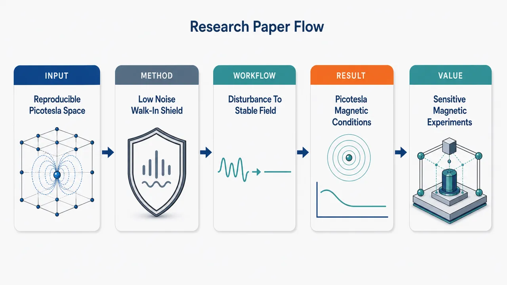

AI 文献日报
AI × Science 文献日报 2026/06/21
聚焦 AI × 物理 / 化学 / 材料交叉方向，自动过滤明显偏题的医学、教育与社会科学内容，并按主题重新排版，便于快速深读。
AI | 物理 | 化学 | 材料 | 交叉学科
日报精选
3
主线候选
4
期刊 / 来源
2
arXiv 相关
0
原始候选 4 篇中，已剔除 0 篇明显偏离主线的内容，并从剩余 4 篇主线相关文献中精选 3 篇进入日报页，优先保留 AI × 物理 / 化学 / 材料交叉与关键计算方法工作。
01
今日摘要
总览：今日3篇集中在超低磁场实验环境、量子基础模型与量子引力参数起源。代表性工作包括步入式皮特斯拉级可复现磁环境，以及将双缝干涉解释为莫尔采样与非线性探测的局域模型。
热点：高精度测量正在从主动动态补偿转向更低噪声、更可复现的被动或准静态磁环境设计。量子基础方向继续检验标准解释中的隐含假设，尤其是局域性、探测非线性与可观测条纹之间的关系。量子引力讨论则把连续耦合参数从外部可调量改写为理论内部局域算符，指向更强的自洽性约束。整体上，实验控制与理论本体论问题并行推进。
📚
今日文献
3 篇 · 1 含图深析-
01
📊 含图深析
💡 亮点：步入式环境实现皮特斯拉级可复现磁条件。
📖 展开分析 + 配图

研究问题生物磁学和基础物理测量需要一个人员或大型设备可进入的超低磁场空间，但传统主动动态补偿室往往系统复杂、补偿过程会引入额外噪声，难以同时获得皮特斯拉级低磁场与可重复的空间—时间磁条件。创新方法构建一种步入式皮特斯拉级磁环境，把重点从单纯“强力主动抵消磁场”转向“低复杂度、低补偿噪声、可复现时空磁条件”的整体环境设计；Aha 点是用更简化的磁环境方案服务高灵敏度实验，而不是依赖复杂动态补偿系统堆叠性能。工作流程外界环境磁扰动进入实验空间 → 通过步入式低磁场环境进行磁屏蔽或补偿控制 → 降低残余磁场与补偿噪声 → 在空间位置和时间序列上维持可重复的皮特斯拉级磁条件 → 为生物磁学传感器、基础物理实验装置或人员进入式测量提供稳定实验背景。关键结果论文声称实现了面向生物磁学与基础物理测量的步入式皮特斯拉级磁环境，并以比常规主动动态补偿室更低的系统复杂度和更低的补偿噪声为目标，支持可复现的空间—时间磁条件；但摘要未给出具体残余磁场、稳定性、均匀性或噪声谱数值。应用价值该研究可为极弱磁信号实验提供更安静、更可重复的磁背景，使脑磁、心磁等生物磁学测量和精密基础物理实验更容易比较、复现实验结果，并降低建设与运行复杂度，提升步入式低磁场实验平台的实用性。核心概览
该论文面向生物磁学与基础物理测量，构建一种步入式皮特斯拉级磁环境，旨在以较低系统复杂度和较低补偿噪声实现可复现的时空磁条件。
方法要点
- 构建“步入式”磁环境，适用于需要人员或设备进入的低磁场实验场景。
- 目标磁场水平为皮特斯拉级，用于满足高灵敏度磁测量需求。
- 设计思路相对区别于常规主动动态补偿室，强调降低系统复杂度。
- 关注降低补偿过程引入的噪声，而不仅是磁场幅值控制。
- 强调磁条件的空间与时间可复现性；具体实现方案摘要未详述。
关键结果
- 论文声称构建了面向生物磁学与基础物理测量的皮特斯拉级磁环境。
- 相比常规主动动态补偿室，其目标是降低复杂度与补偿噪声。
- 该环境旨在保持可复现的时空磁条件。
- 具体磁场残余水平、稳定性指标、空间均匀性、噪声谱或验证实验摘要未详述。
创新性判断
- 可能的新颖点在于：不是单纯依赖复杂主动动态补偿，而是提出一种复杂度更低、补偿噪声更小的步入式皮特斯拉级磁环境方案。
- 对同方向研究而言，其潜在价值在于兼顾“低磁场水平”和“时空条件可复现”，这对生物磁学与基础物理实验的可比性和重复性很重要。
- 但摘要未说明具体结构、控制策略、屏蔽材料、补偿线圈布置或性能数据，因此其技术路线与相对优势的实证程度无法确定。
- 02
- 03